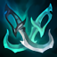

<
Welcome to patch 1.8!
>
Release 02/03/2019 3:48:53 PM
Player
With infinit attack speed, Player damage output was too high even without any items. We're making player's basic attack has a cooldown that can be lowered by Attack Speed from items like
Rapid fire canon and  Phantom dancer
new
Player now has a cooldown on his basic attack and cannot attack during that time (The cooldown is determined by the following formula: player's attack speed × 0.5 to get a cooldown in seconds)
Player base attack speed
0
2 (1 second cooldown)
Monster base attack speed
2
4 (4 seconds cooldown)
new
Statikk Shiv
new
UNIQUE PASSIVE: Grants +30% critical strike chance and 40% attack speed
new
UNIQUE PASSIVE: Basic attacks deal 10 + 10% of target missing health as bonus true damage
new
Runaan's Hurricane
new
UNIQUE PASSIVE: Grants +30% critical strike chance and 40% attack speed
new
UNIQUE PASSIVE: Damaging an enemy shoots 3 additional bullets (5 seconds cooldown)
new
Stormrazor
new
UNIQUE PASSIVE: Grants +60 attack damage and +30% attack speed
new
Berserker's Greaves
new
UNIQUE PASSIVE: Grants +35% attack speed
new
UNIQUE PASSIVE: Grants +20 mouvement speed
Blade of the ruined King
new
Now grants 40% attack speed
Bug fixes and other changes
New effect
On-hit effects now have 1 second delay
New
New settings menu! You can now set the game preference as you wish!
New
Now you can view an item description by hovering on it in your owned items slots
New
HUD now shows items cooldowns if any
Fixed bug where item shop stats wouldn't update
Fixed bug where shields won't stack
Fixed bug where opening patch notes then opening item shop will result of them stacking on each other
Fixed bug where selling attack speed item won't substract the same amount as granted when bought
Fixed bug where buying
The true alpha
won't grant AD or life steal if it has been bought and sold before
Fixed bug where hovering over an item in the item slots won't update the stats unless you open the item shop